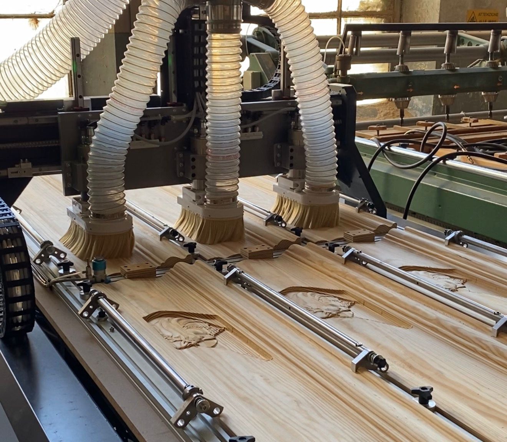
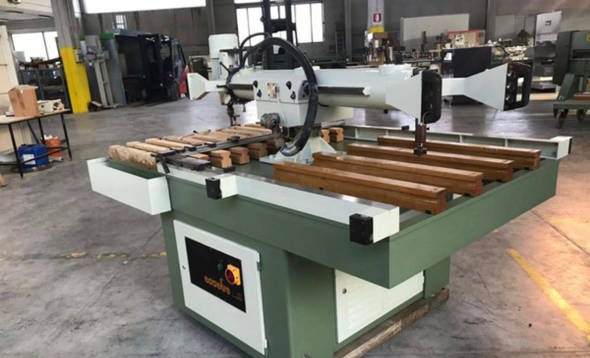
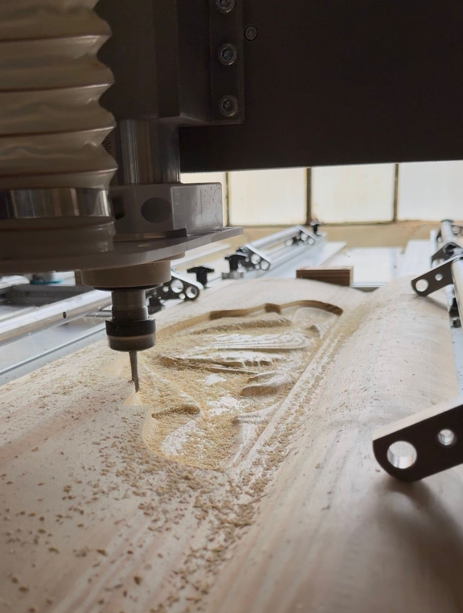

project 1
Il cliente aveva la necessità di automatizzare una lavorazione complessa, caratterizzata da geometrie variabili e cicli produttivi non ripetibili con una macchina standard.
- Problema: processo manuale lento e soggetto a errori
- Soluzione: macchina CNC su misura con logiche dedicate
- Risultato: maggiore ripetibilità e semplicità d’uso


